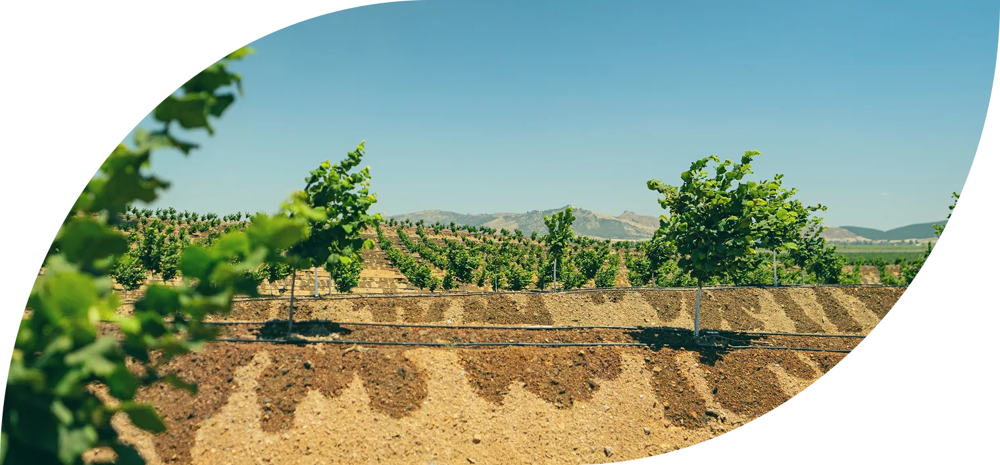
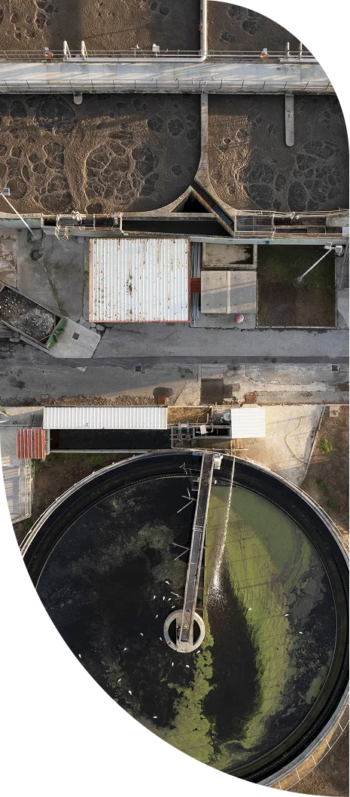
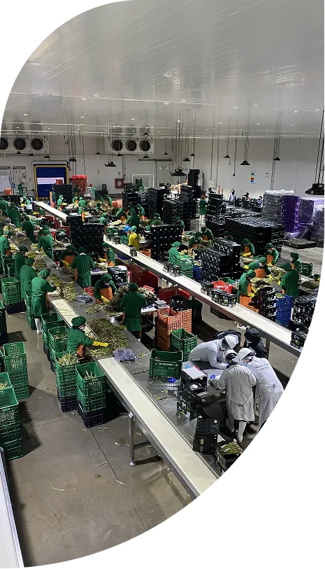
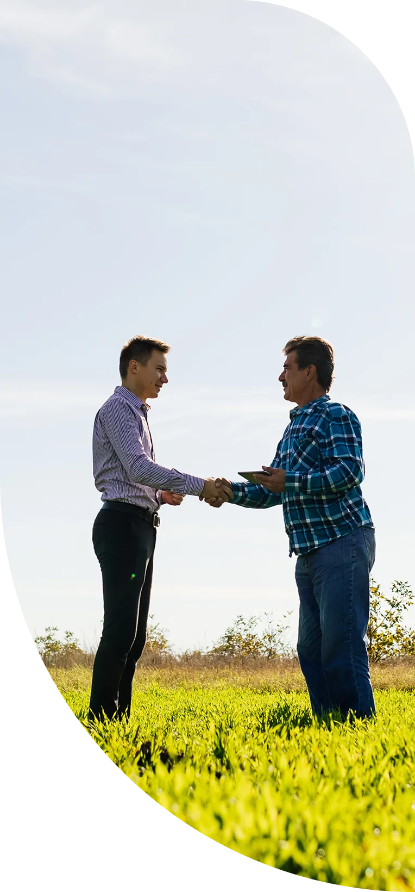
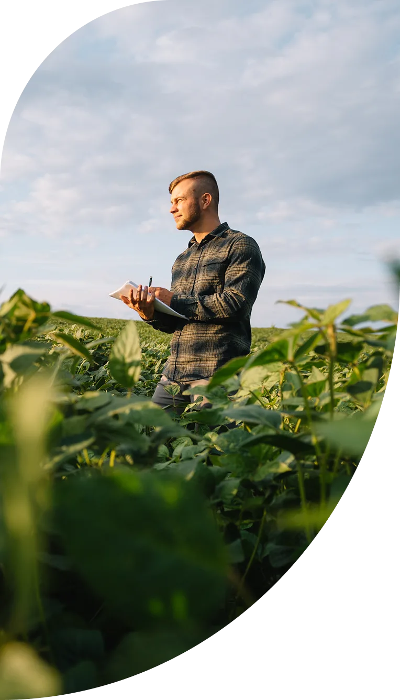

+60k
Hectares developed across a wide range of agricultural projects
View more
We design, implement and operate agricultural projects under ESG criteria, combining sustainable practices, traceable institutional management and high production standards.
TerraTech Agro is an agribusiness management company with extensive experience
in the agro-export sector, integrating water management,
corporate financial management,
farm development, production control
and sustainable resource management.









+60k
Hectares developed across a wide range of agricultural projects
View moreKPIs
Traceable agricultural management
View more+25
Years of strategic partnerships and supplier relationships
View more